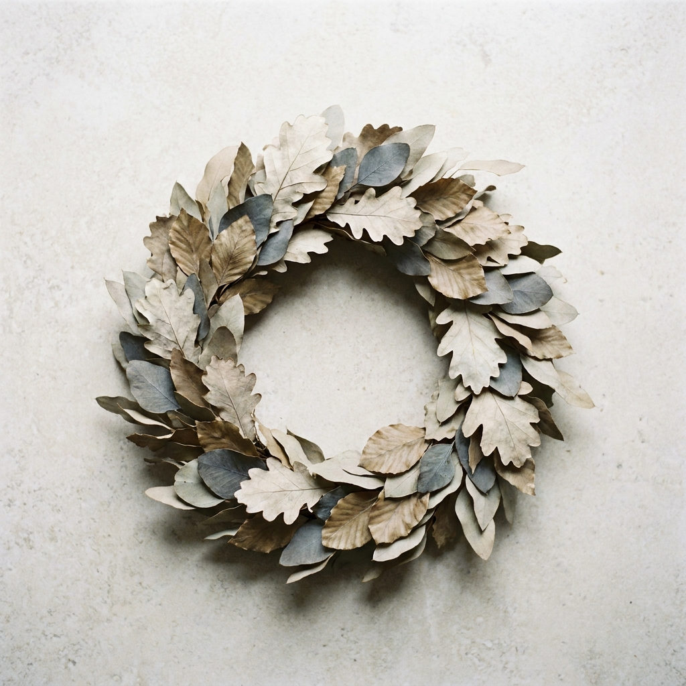

Hvorfor vi gjør dette
Lysning ble startet i 2014 av Anna Sande og Henrik Berg, etter mange år hver for seg i større begravelsesbyråer. Det de savnet, og som ble ideen bak Lysning, var den lille tingen: tid. Tid til å sette seg ned. Tid til å la familier finne sine egne ord. Tid til å ikke forhaste valg som man bærer med seg lenge.
Vi har bevisst valgt å holde byrået lite. Det betyr at den samme personen følger dere gjennom alt — fra første samtale, gjennom seremonien, til den siste meldingen til Skatteetaten er sendt. Dere skal slippe å forklare den samme historien til fem ulike mennesker.
Vi tror også på lokal forankring. Blomstene våre kommer fra binderier i samme by. Trykksakene blir laget hos en familieeid trykker rundt hjørnet. Kistene kommer fra håndverkere som vi kjenner, som vi har vært på besøk hos, og som lager dem selv. Det er ikke billigst — men det er sant.
En verdig avskjed begynner med en stille samtale. Det fortsetter med trygg, lokal håndverksstolthet i alle små valg. Det er det vi forsøker å gjøre, hver eneste gang.

Hva vi står forTre stille løfter
Personlig oppfølging
Den samme personen følger dere fra første samtale til siste papir er sendt inn. Ingen ny ansiktsskifte underveis.
Lokal forankring
Blomster, trykksaker, kister og samarbeidspartnere — alt er lokalt. Vi kjenner menneskene bak hvert valg.
Åpne priser
Vi forklarer alle valg åpent — også de økonomiske. Ingen overraskelser, ingen oppsalg, ingen skjulte kostnader.
Vi er tilgjengelige hele døgnet
Om du nettopp har mistet noen, eller bare ønsker en uforpliktende samtale — ring oss eller send oss en stille melding. Vi ringer tilbake i ro.
+47 73 00 00 00 Døgnvakt — alle dager